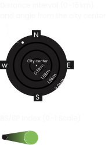

Seoul (Temperate Forest)
The map shows how you perceive and value urban nature by quantifying and locating your Biophilic Individual Perceptions (BiP) value in the city.
Loading data...

The map shows how you perceive and value urban nature by quantifying and locating your Biophilic Individual Perceptions (BiP) value in the city.
